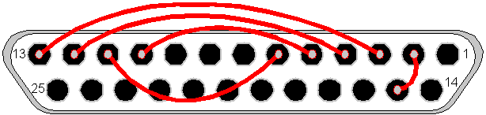

Parallel Port Loopback plug |
Top Previous |
|
The parallel port on IBM compatible PCs have always used a DB-25 connector. However, over time several changes have taken place to the electrical interface with the introduction of enhanced and bi-directional parallel ports. We believe that this plug will work with all styles of parallel ports.
To make the loop back plug the following pins need to be connected together:
▪Data 0 and Error status (Pin 2 & 15) ▪Data 1 and Select status (3 & 13) ▪Data 2 and Paper out status (4 & 12) ▪Data 3 and Acknowledge status (5 & 10) ▪Data 4 and Busy status (6 & 11)
This diagram shows the connections that need to be made. It's the rear view of the male DB-25 connector that's required for the plug. The red lines and grey dots show the connections that need to be made.
 Male DB-25 connector - Rear view
|